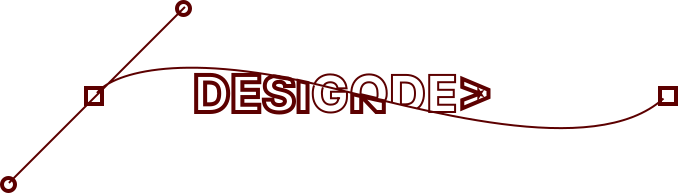

Sofware Engineer
Especialista em desenvolvimento Web
Responsável por tornar sua ideia em realidade. Desde a concepção do design trabalhando UX/UI, arquitetura, backend, frontend e mobile pode contar comigo!

Responsável por tornar sua ideia em realidade. Desde a concepção do design trabalhando UX/UI, arquitetura, backend, frontend e mobile pode contar comigo!
J. Walker
Jhony Walker
Engenheiro de Software apaixonado pelo que faz, a procura de constante aperfeiçoamento e conhecimento, trabalhando para obter os melhores resultados e objetivos. Indo em busca do crescimento pessoal e profissional mantendo meu foco e da equipe onde estou inserido. Enxergo os desafios como oportunidades de criar novas soluções otimizando processos entregando produtos que impactam o usuário/cliente positivamente.
Principais clientes nos quais já atuei: